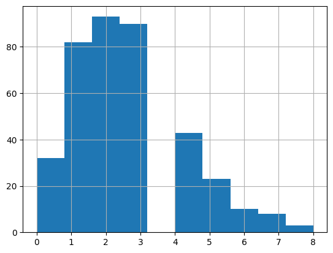
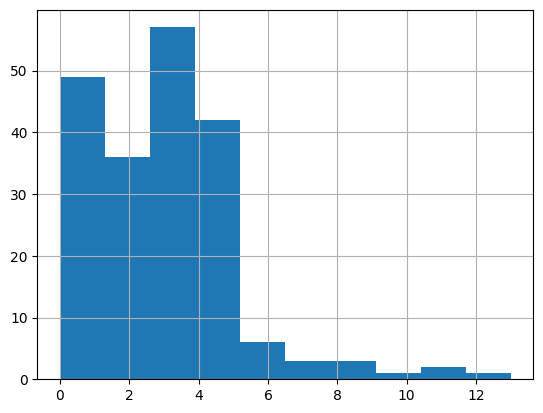

Code
---
title: "Hypothesis Testing: Men vs Women's Football"
description: "Statistical Significance Tests using T-distribution."
execute:
enabled: false
------
title: "Hypothesis Testing: Men vs Women's Football"
description: "Statistical Significance Tests using T-distribution."
execute:
enabled: false
---
You’re working as a sports journalist at a major online sports media company, specializing in soccer analysis and reporting. You’ve been watching both men’s and women’s international soccer matches for a number of years, and your gut instinct tells you that more goals are scored in women’s international football matches than men’s. This would make an interesting investigative article that your subscribers are bound to love, but you’ll need to perform a valid statistical hypothesis test to be sure!
While scoping this project, you acknowledge that the sport has changed a lot over the years, and performances likely vary a lot depending on the tournament, so you decide to limit the data used in the analysis to only official FIFA World Cup matches (not including qualifiers) since 2002-01-01.
You create two datasets containing the results of every official men’s and women’s international football match since the 19th century, which you scraped from a reliable online source. This data is stored in two CSV files: women_results.csv and men_results.csv.
The question you are trying to determine the answer to is:
Are more goals scored in women’s international soccer matches than men’s?
You assume a 10% significance level, and use the following null and alternative hypotheses:
\(H_0\) : The mean number of goals scored in women’s international soccer matches is the same as men’s.
\(H_A\) : The mean number of goals scored in women’s international soccer matches is greater than men’s.
# Load and inspect data for men
mens_df = pd.read_csv('men_results.csv')
mens_df.head()
# check column structure
mens_df.columns
# first column is an index - convert to match id
mens_df.rename(columns = {'Unnamed: 0':'match_id'}, inplace = True)
mens_df.info()<class 'pandas.core.frame.DataFrame'>
RangeIndex: 44353 entries, 0 to 44352
Data columns (total 7 columns):
# Column Non-Null Count Dtype
--- ------ -------------- -----
0 match_id 44353 non-null int64
1 date 44353 non-null object
2 home_team 44353 non-null object
3 away_team 44353 non-null object
4 home_score 44353 non-null int64
5 away_score 44353 non-null int64
6 tournament 44353 non-null object
dtypes: int64(3), object(4)
memory usage: 2.4+ MB# Load and inspect data for women
womens_df = pd.read_csv('women_results.csv')
womens_df.head()
# check column structure
womens_df.columns
# first column is an index - convert to match id
womens_df.rename(columns = {'Unnamed: 0':'match_id'}, inplace = True)
womens_df.info()<class 'pandas.core.frame.DataFrame'>
RangeIndex: 4884 entries, 0 to 4883
Data columns (total 7 columns):
# Column Non-Null Count Dtype
--- ------ -------------- -----
0 match_id 4884 non-null int64
1 date 4884 non-null object
2 home_team 4884 non-null object
3 away_team 4884 non-null object
4 home_score 4884 non-null int64
5 away_score 4884 non-null int64
6 tournament 4884 non-null object
dtypes: int64(3), object(4)
memory usage: 267.2+ KB# filter mens data
men_filtered = mens_df[(mens_df["date"] >= "2002-01-01") & (mens_df["tournament"] == "FIFA World Cup")]
men_filtered.info()<class 'pandas.core.frame.DataFrame'>
Int64Index: 384 entries, 25164 to 44352
Data columns (total 7 columns):
# Column Non-Null Count Dtype
--- ------ -------------- -----
0 match_id 384 non-null int64
1 date 384 non-null object
2 home_team 384 non-null object
3 away_team 384 non-null object
4 home_score 384 non-null int64
5 away_score 384 non-null int64
6 tournament 384 non-null object
dtypes: int64(3), object(4)
memory usage: 24.0+ KB# filter womens data
women_filtered = womens_df[(womens_df["date"] >= "2002-01-01") & (womens_df["tournament"] == "FIFA World Cup")]
women_filtered.info()<class 'pandas.core.frame.DataFrame'>
Int64Index: 200 entries, 1600 to 4469
Data columns (total 7 columns):
# Column Non-Null Count Dtype
--- ------ -------------- -----
0 match_id 200 non-null int64
1 date 200 non-null object
2 home_team 200 non-null object
3 away_team 200 non-null object
4 home_score 200 non-null int64
5 away_score 200 non-null int64
6 tournament 200 non-null object
dtypes: int64(3), object(4)
memory usage: 12.5+ KB::: {#a2261369-092f-4b9e-a16f-450118907ffd .cell executionCancelledAt=‘null’ executionTime=‘119’ lastExecutedAt=‘1701157887015’ lastScheduledRunId=‘null’ lastSuccessfullyExecutedCode=’import matplotlib.pyplot as plt # Create group and goals_scored columns men_filtered[“group”] = “men” women_filtered[“group”] = “women” men_filtered[“goals_scored”] = men_filtered[“home_score”] + men_filtered[“away_score”] women_filtered[“goals_scored”] = women_filtered[“home_score”] + women_filtered[“away_score”]
men_filtered[“goals_scored”].hist() plt.show()’ execution_count=19}
import matplotlib.pyplot as plt
# Create group and goals_scored columns
men_filtered["group"] = "men"
women_filtered["group"] = "women"
men_filtered["goals_scored"] = men_filtered["home_score"] + men_filtered["away_score"]
women_filtered["goals_scored"] = women_filtered["home_score"] + women_filtered["away_score"]
# Determine normality using histograms
men_filtered["goals_scored"].hist()
plt.show()
:::
# Determine normality using histograms
women_filtered["goals_scored"].hist()
plt.show()
The distribution of goals scored does not follow a bell-shaped pattern - we cannot assume a normal distribution. We cant make any further assumptions on distribution Wilcoxon-Mann-Whitney test of two groups is the most appropriate as underlying distribution doesn’t matter.
::: {#5020b9fd-b92e-4dda-a6ba-123b5afad074 .cell executionCancelledAt=‘null’ executionTime=‘52’ lastExecutedAt=‘1701157887280’ lastScheduledRunId=‘null’ lastSuccessfullyExecutedCode=’import pingouin from scipy.stats import mannwhitneyu
both = pd.concat([men_filtered, women_filtered], axis=0, ignore_index=True)
both_subset = both[[“goals_scored”, “group”]] both_subset_wide = both_subset.pivot(columns=“group”, values=“goals_scored”)
results_pg = pingouin.mwu(x=both_subset_wide[“women”], y=both_subset_wide[“men”], alternative=“greater”)
results_scipy = mannwhitneyu(x=women_filtered[“goals_scored”], y=men_filtered[“goals_scored”], alternative=“greater”)
p_val = results_pg[“p-val”].values[0]
if p_val <= 0.01: result = “reject” else: result = “fail to reject”
result_dict = {“p_val”: p_val, “result”: result}
print(result_dict)’ quarto-private-1=‘{“key”:“outputsMetadata”,“value”:{“0”:{“height”:38,“type”:“stream”}}}’ execution_count=21}
import pingouin
from scipy.stats import mannwhitneyu
# Combine women's and men's data and calculate goals scored in each match
both = pd.concat([men_filtered, women_filtered], axis=0, ignore_index=True)
# Transform the data for the pingouin Mann-Whitney U t-test/Wilcoxon-Mann-Whitney test
both_subset = both[["goals_scored", "group"]]
both_subset_wide = both_subset.pivot(columns="group", values="goals_scored")
# Perform right-tailed Wilcoxon-Mann-Whitney test with pingouin
results_pg = pingouin.mwu(x=both_subset_wide["women"],
y=both_subset_wide["men"],
alternative="greater")
# Alternative SciPy solution: Perform right-tailed Wilcoxon-Mann-Whitney test with scipy
results_scipy = mannwhitneyu(x=women_filtered["goals_scored"],
y=men_filtered["goals_scored"],
alternative="greater")
# Extract p-value as a float
p_val = results_pg["p-val"].values[0]
# Determine hypothesis test result using sig. level
if p_val <= 0.01:
result = "reject"
else:
result = "fail to reject"
result_dict = {"p_val": p_val, "result": result}
print(result_dict){'p_val': 0.005106609825443641, 'result': 'reject'}:::
As we reject the null, there is sufficient evidence to believe the number of goals scored in women’s matches is higher.
p value: under the null hypothesis, the probablity of observing test statistic as low as the one obtained, due to chance